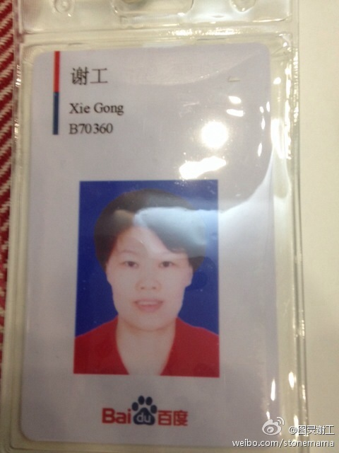
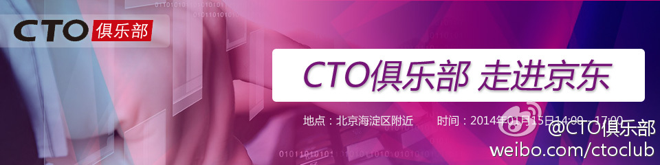

这种争议在公司应该很常见吧。//@庞志辉: 没想到csdn也有这种争议。不可调和的思维模式处处可见。凡是决策，就有风险，有就有吧，谁是决策者谁最后承担风险。所谓：没有人会为他人决策承担责任，就在于此。@Ada李力:和同事聊到用户数据，我的想法是公开，并且建立机制让用户自己修改或设置他人浏览权限，这样能解决数据更新问题，以及数据一致问题。她觉得公开信息维护成本高，而信息公开本身对业务帮助不大，因此倾向只放到后台供运营人员查看。－ 其实这是两种不同思维导致。
反思我的出发点，是相信以下两点：一是相信透明公开。透明公开有助于提高效率，纠正偏差；所以信息能够放到前台，就往前台推，不要只在后台藏着掖着；二是相信平等，给用户更多地控制权和对自己信息的掌握感，这有助于提升用户体验。@Ada李力:和同事聊到用户数据，我的想法是公开，并且建立机制让用户自己修改或设置他人浏览权限，这样能解决数据更新问题，以及数据一致问题。她觉得公开信息维护成本高，而信息公开本身对业务帮助不大，因此倾向只放到后台供运营人员查看。－ 其实这是两种不同思维导致。
终于公布去向了。[呵呵]@谢工在图灵和GitChat:众里寻她千百度。百度，我来了。未来文库和阅读的运营建设，仰仗大家支持。欢迎大家关注和下载@百度阅读 的客户端yuedu.baidu.com，尽管吐槽。欢迎国内外出版社版权方、作译者、编辑和读者与文库和阅读平台多多合作。希望得到大家的支持多一点，拍砖可以轻点。 
新的一年开始了，新的CTO俱乐部系列活动也启动了。@CTO俱乐部:#CTO俱乐部走进企业# 1月15日将走进京东商城网页链接 场地仅能容纳50人，报名缺已达134人。2014年我们将每月组织会员走进一家知名企业，已计划走进亚马逊、当当等，如果您希望参观拜访哪家公司，分享哪方面的主题，欢迎自荐或推荐给我们，由我们策划活动。 @Ada李力 网页链接 